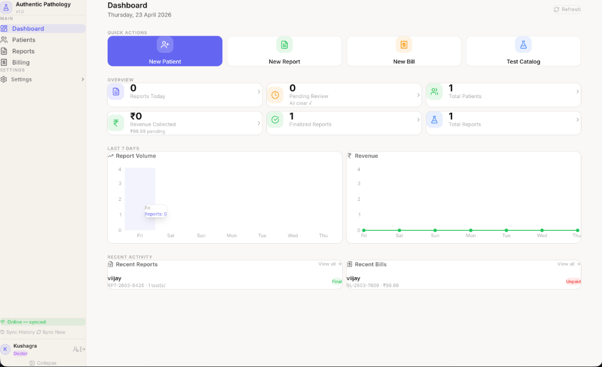
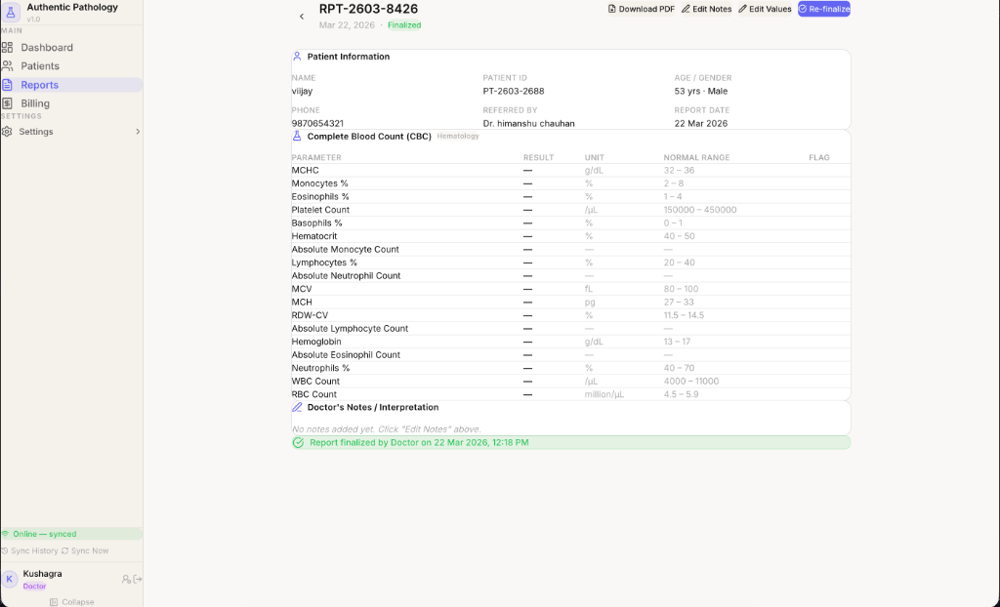
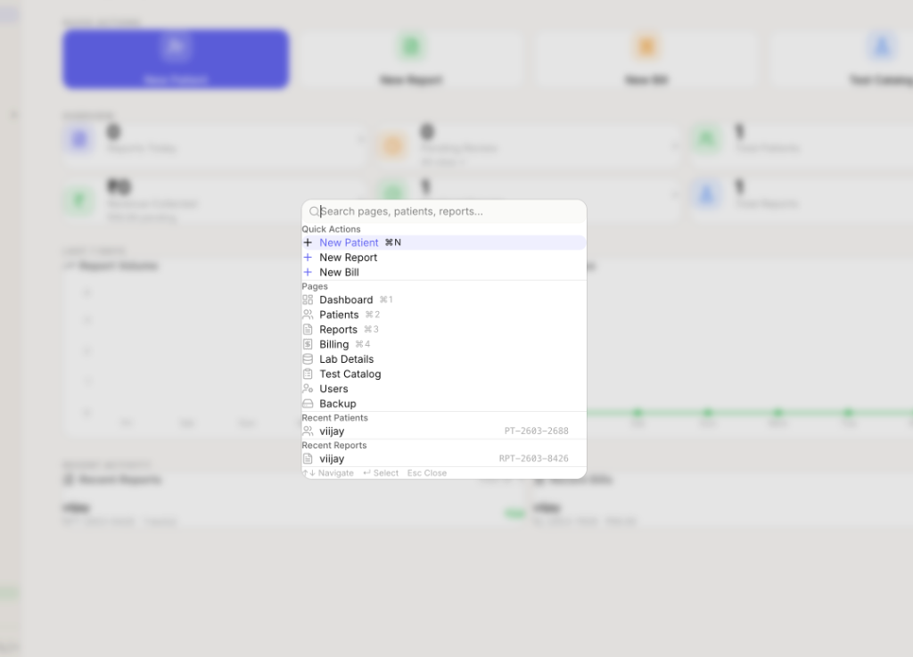

Healthcare · Hybrid Architecture · Systems Design
Overview
Authentic Pathology is a hybrid-first Laboratory Information Management System designed for pathology labs operating in environments with unreliable internet connectivity — clinics in semi-urban areas, smaller diagnostic labs, field settings.
The critical insight: lab operations cannot pause for a network outage. Patient reports need to be generated, test results recorded, and billing processed regardless of connectivity status.

The Problem
Existing LIMS solutions assumed constant connectivity. When the internet dropped — which in many Indian clinic environments happens daily — the entire system became unusable. Staff would resort to paper, creating reconciliation nightmares.
Semi-urban clinics routinely face 30–60 minute outages. Cloud-only LIMS products would freeze entirely, blocking patient intake and report generation.
Going offline and back online creates conflict risks. Two instances editing the same patient record need a robust conflict resolution strategy, not just "last write wins."
Lab staff needed to trust the system completely. An "Online — synced" status indicator wasn't just UI polish — it was the foundation of operator confidence.

Approach
The system uses SQLite as the local data store with a custom sync engine that handles bidirectional replication when connectivity is restored. Every write is timestamped and versioned — conflicts are surfaced explicitly rather than silently resolved.
The UI was designed to make connectivity status a first-class citizen — visible in the sidebar at all times, with clear affordances for manual sync and conflict review. The system never pretends to be something it isn't.
"Reliability in imperfect environments is a design problem, not just an engineering one. The interface had to make ambiguity visible."
The command palette (⌘K) was added to give power users fast access to any function — new patient, new report, billing — without navigating menus. In a busy lab, every second of friction counts.

Outcome
In production, the system has maintained 100% operational continuity through connectivity outages. Lab staff report significantly higher confidence in the system compared to their previous cloud-only solutions.
The hybrid architecture pattern developed for this project is directly reusable for any mission-critical application operating in unreliable infrastructure environments — a growing problem in healthcare, logistics, and field operations globally.